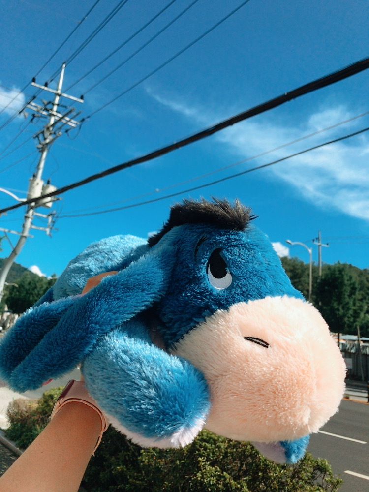

HYESOO'S FAVOURITE THING ☺︎


My favourite character is Eeyore .
Eeyore is a donkey in Winnie the Pooh.
When I was six years old, my father bought me this character pillow for Christmas present.
From then on, I started to have an affection for the character Eeyore,
and I really like it until now. When I see the products made of Eeyore,
I always buy them and collect, so there are about 20 items related to Eeyore.
Eeyore is always a gloomy and silent character.
When I watch the pooh movie, I want to comfort and help him.
Maybe that's why I'm more attached to it, although it's not a real animal.

This Eeyore is my most treasured doll.
The person who I cherish gave me as a present.
When I see this, It reminds me of the day I received this and memory with that person.
I always hug this cushion tightly when I sleep,
and it's big and soft, so I feel good when I sleep with it.

I like taking pictures and taking pictures.
Turn on the camera and record wherever I want to remember.
I always took pictures with my cell phone camera, but one day I found out that there was a film camera.
If I take a picture with a film camera, the picture is not saved to the camera,
so only one film that comes out immediately after the shooting becomes a memory.
So there are some people who think negatively about film cameras. However, I thought there was a different
feeling from the filter that looked at the film. I really care about this film camera .
I make many memories with this camera when I go out with my friends or when I have an important appointment.
I want to make more memories with this camera, as I have done so far.
FUJIFILM (Instax mini 8)